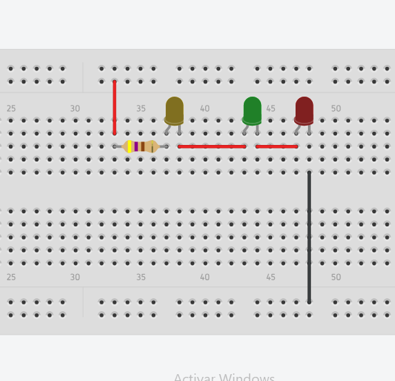
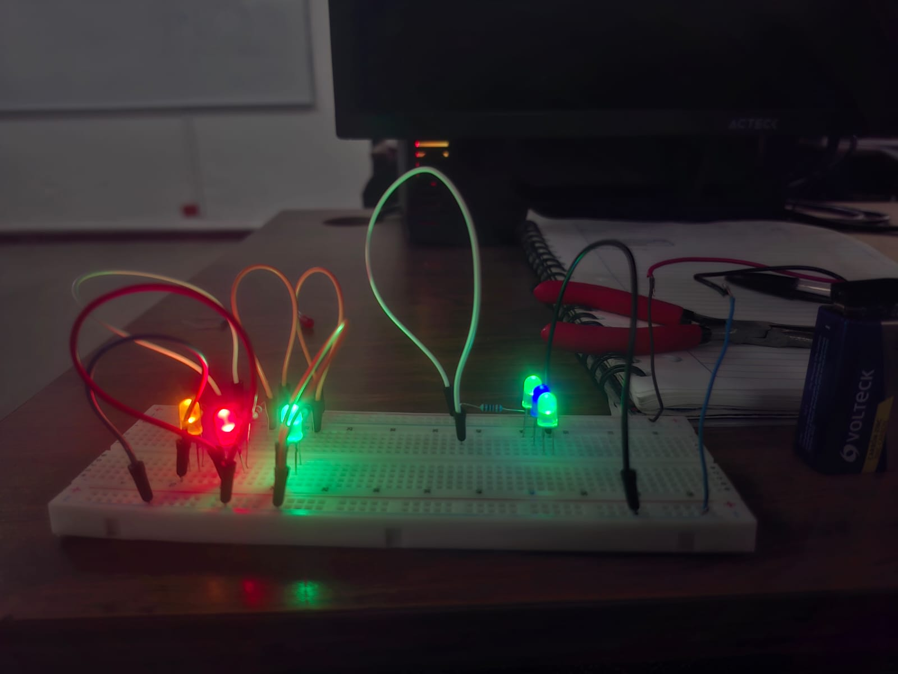
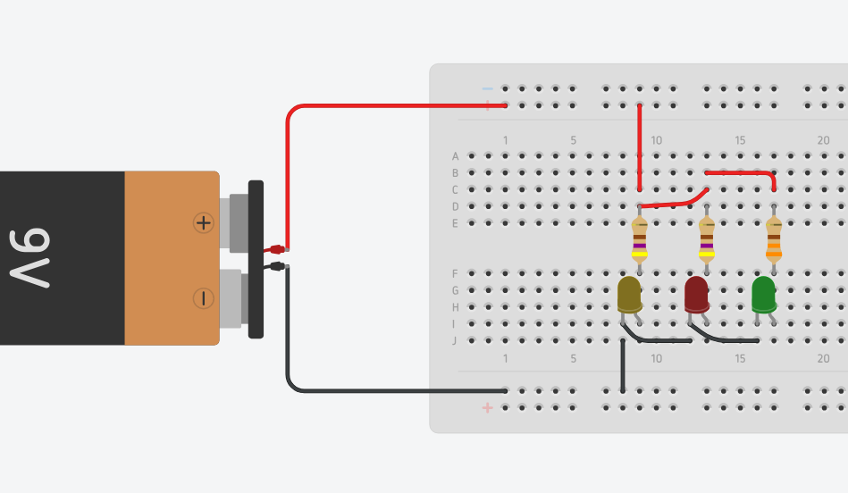

Circuito en Serie

La corriente fluye por un solo camino
• Resistencia Total: Rtotal = R₁ + R₂ + R₃ + ...
• Corriente: I = V / Rtotal (misma en todos los componentes)
• Voltaje: Vtotal = V₁ + V₂ + V₃ + ...
📍 Características
Los componentes están conectados uno tras otro formando una única ruta para el flujo de corriente.
🔌 Corriente
La misma corriente fluye a través de todos los componentes (I₁ = I₂ = I₃).
⚡ Voltaje
El voltaje se divide entre los componentes. La suma de voltajes parciales es igual al voltaje total.
🔧 Resistencia
La resistencia total es la suma de todas las resistencias individuales.
✅ Ventajas y Aplicaciones
- Control simple: Un solo interruptor controla todo el circuito
- Menos cableado: Requiere menos cable que un circuito paralelo
- Fácil detección de fallas: Si un componente falla, todo se apaga
- Aplicaciones: Luces navideñas antiguas, interruptores de seguridad
⚠️ Desventajas
- Si un componente falla, todo el circuito deja de funcionar
- No se pueden controlar componentes individualmente
- La resistencia total aumenta con cada componente

La corriente fluye por un solo camino
Circuito en Paralelo

La corriente se divide en múltiples caminos
• Resistencia Total: 1/Rtotal = 1/R₁ + 1/R₂ + 1/R₃ + ...
• Corriente Total: Itotal = I₁ + I₂ + I₃ + ...
• Voltaje: V = V₁ = V₂ = V₃ (mismo en todos los componentes)
📍 Características
Los componentes están conectados en múltiples caminos paralelos, cada uno con sus propios nodos.
🔌 Corriente
La corriente se divide entre las ramas. La corriente total es la suma de las corrientes en cada rama.
⚡ Voltaje
El voltaje es el mismo en todos los componentes paralelos (V₁ = V₂ = V₃).
🔧 Resistencia
La resistencia total es menor que la resistencia más pequeña del circuito.
✅ Ventajas y Aplicaciones
- Independencia: Cada componente funciona independientemente
- Mismo voltaje: Todos los dispositivos reciben el voltaje completo
- Redundancia: Si un componente falla, los demás siguen funcionando
- Control individual: Cada rama puede tener su propio interruptor
- Aplicaciones: Instalaciones eléctricas domésticas, sistemas de iluminación, enchufes
⚠️ Desventajas
- Requiere más cable que un circuito en serie
- Instalación más compleja
- Mayor consumo de corriente total
La corriente fluye por un solo camino
Tabla Comparativa: Serie vs Paralelo
🔗 Circuito en Serie

Conexión en cadena
⚡ Circuito en Paralelo

Múltiples caminos
| Característica | 🔗 Circuito en Serie | ⚡ Circuito en Paralelo |
|---|---|---|
| Conexión | Un solo camino continuo | Múltiples caminos independientes |
| Corriente | Igual en todos los componentes (I = constante) | Se divide entre las ramas (Itotal = I₁ + I₂ + ...) |
| Voltaje | Se divide (Vtotal = V₁ + V₂ + ...) | Igual en todos los componentes (V = constante) |
| Resistencia Total | Rtotal = R₁ + R₂ + R₃ + ... | 1/Rtotal = 1/R₁ + 1/R₂ + 1/R₃ + ... |
| Si un componente falla | Todo el circuito se interrumpe | Los demás componentes siguen funcionando |
| Aplicación principal | Interruptores de seguridad, luces decorativas | Instalaciones eléctricas domésticas |
| Ventaja principal | Simplicidad y menos cableado | Independencia y confiabilidad |
| Desventaja principal | Dependencia total entre componentes | Mayor complejidad y cableado |
💡 Ejemplo Práctico
En tu casa: Las luces y enchufes están conectados en paralelo. Por eso cuando apagas una luz, las demás siguen funcionando. Si estuvieran en serie, al apagar una luz, ¡todas se apagarían!
Luces de Navidad: Las luces navideñas antiguas usaban circuitos en serie. Si una bombilla se quemaba, toda la cadena dejaba de funcionar. Las modernas usan circuitos paralelos o tienen protección especial.